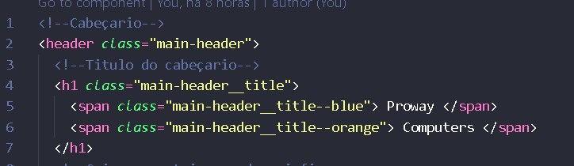

Depois de cria o projeto, com o nome que você desejar.
Crie um novo componente com o nome de "header", usando o comando
ng g component header, que é para fazer o Cabeçario do
site
COMO FAZER O CABEÇARIO:
No header.component.html, crie essas tags:
"header" que será todo o Cabeçario,dentro dele:
"h1" que é para o titulo,
Dentro do "h1", coloque um "span", para dá efeito diferente no
titulo.

Para fazer o menu:
Primeiro crie uma div, com a classe "container-menu" e dentro dela
adicione essas tags:
A tag "nav", que será para a navegação e dentro dela coloque essas
tags:
"ul" para criar uma coluna ,
"l1" para cria uma linha, serão 5 "li", todos links.
Na primeira "li", coloque como um link, essa será o "Produto".
Na segunda "li", será "carrinho", que será também um link
Coloque os iconis, que tem que copiar do site
Font Asewsome, terá iconi no carinho,e nos contatos.
Coloque os estilos que estão na pasta "style para aula 6-B" .
Coloque os nomes das classes, seguindo os nomes que estão nos
styles.
Feche a tag "div",veja com fica na imagem:
E agora faremos o campo de pesquisa do site,
crie uma tag "form" classe "search-form" sem ação por
enquanto,dentro dela coloque :
"input" do tipo texto, depois um "button" dentro dele um iconi de
procura , feche a tag "form", prontinho.
Veja o exemplo , na imagem a baixo: